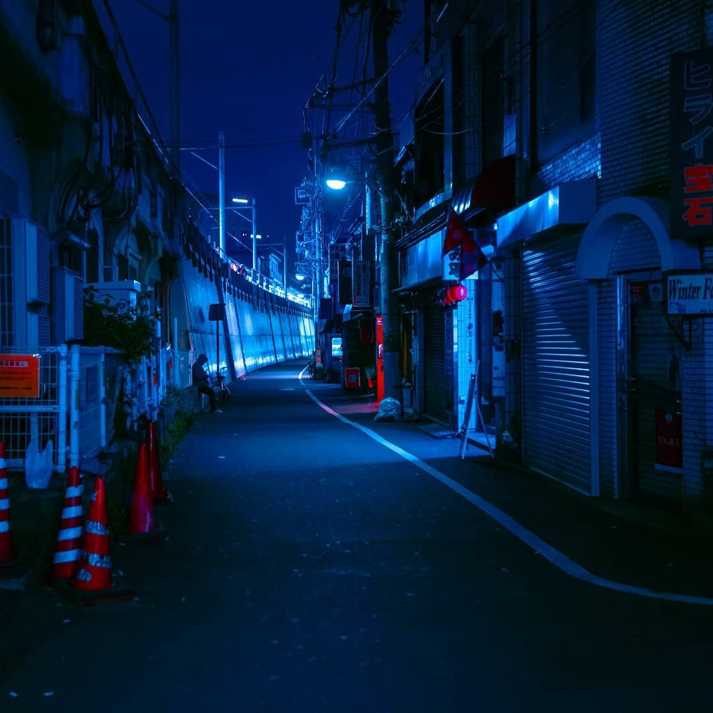
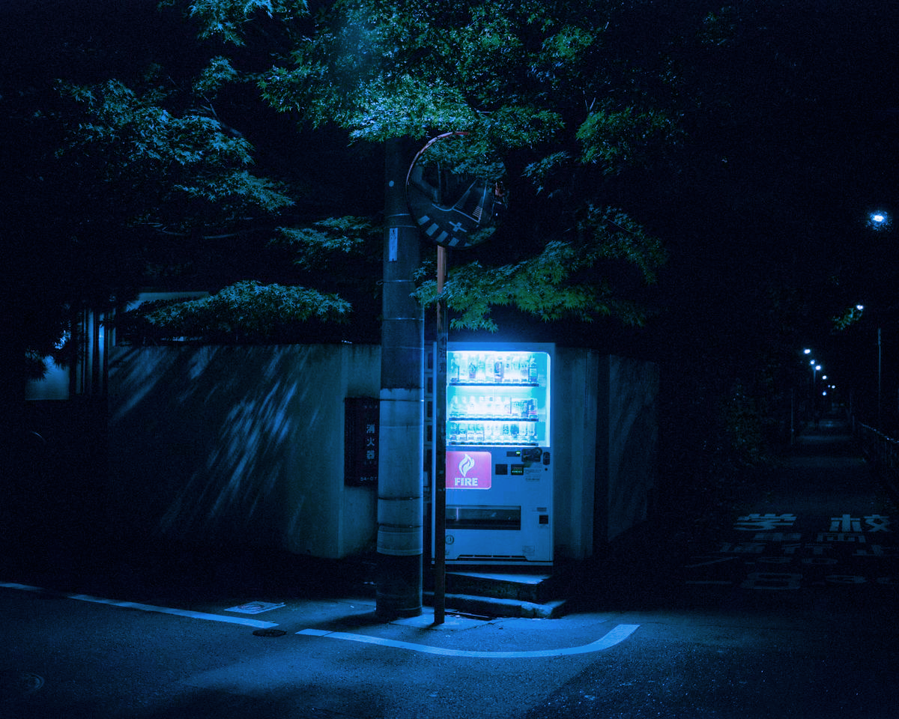
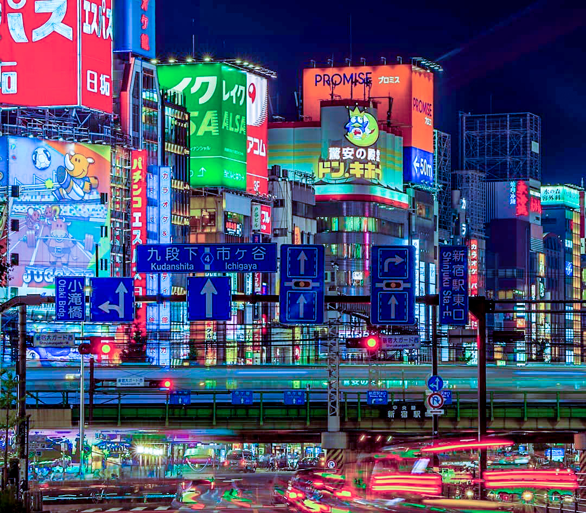
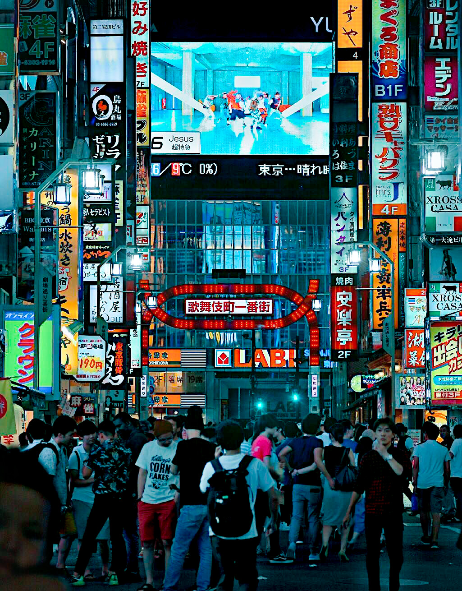
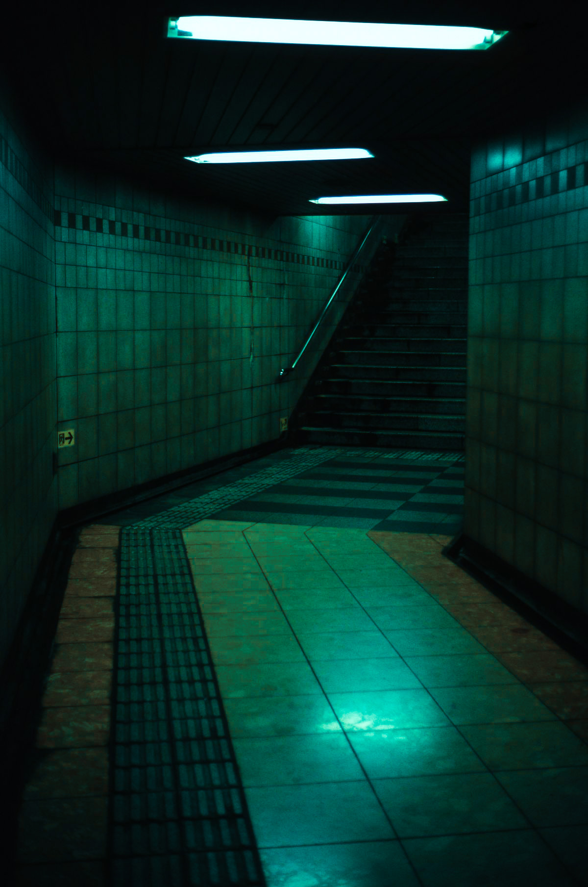
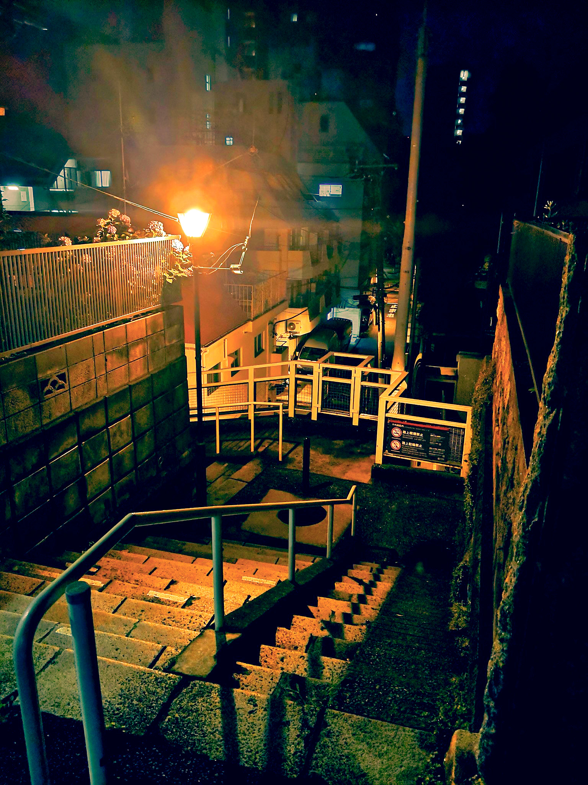
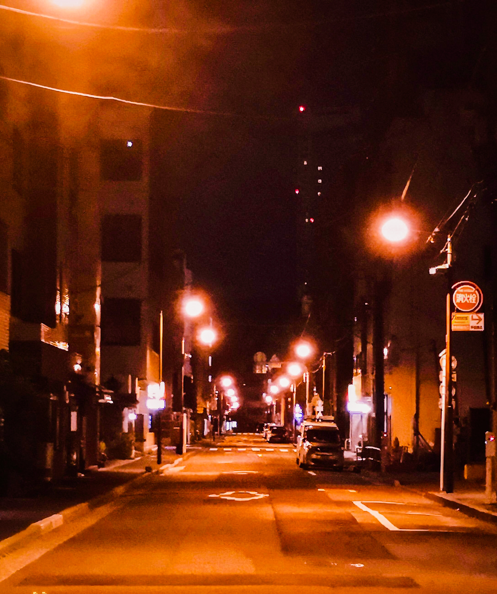
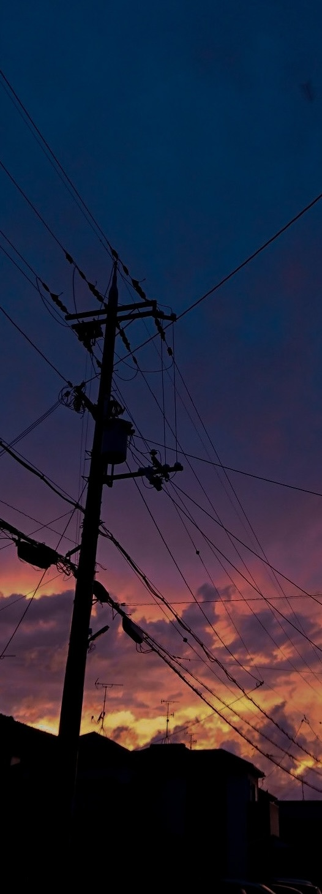

ぽつりと光る、冷たい明り。
感傷にふける宵は
仄かに青く深まる。
瞼は重く、意識は嫌に冴える。
残り少ない水を一気に呷った。

00
TITLE

TAP TO NEXT

夜。
人通りの多い交差点、
点滅する信号機、
神社、寂れた古いマンション、
小さな公園、少し傾いた電柱、
駅、ラクガキだらけのトンネル。
何もかもが、
陽の照る時間とは違った姿を呈する。
ある日の眠れない23時過ぎ、
私はなにを思ったか、
まるで光に集り貪る蛾のように、
気の済むまで夜の街をゆらゆらと彷徨った。
日々胸に溜めこんだ、
グズグズと煮えるざわめきを供養するように、
ひたすらシャッターを切った。
闇夜に輝く光達には得も言われぬ美しさ、
ある種の神秘性が宿る。
そしてその光を捉えることで、
私は私を癒すことができる。
そう信じている。
この場所は、その日から今日までの、
私が消費してきた光の備忘録だ。
scroll

溢れんばかりの人間と、彼らが生み出す
カオスな雰囲気が渦巻く夜の都会には、
「光」が溢れている。
渋谷のスクランブル交差点や新宿
歌舞伎町周辺のエネルギッシュな空気を
象徴するような、目が眩むほどの
輝かしい光もあれば、
その裏通りに隠れる、切れかけで明滅する
蛍光灯や、淡く優しく道を照らす街路灯
など色々な種類が存在することに気付く。
本サイトの目的は、
「光が織りなす夜の街の美しさの再発見
及び、それらを“感情”とリンクさせ
分類する」ことにある。
人には多くの感情が抱え込まれており、
それらが呼び起こされるファクター
として、周囲の環境が大きく作用している。
それに深く関わっているものの一つが
「照明」だ。
私は光が煽る主な感情を、
四つに分類した。
それが
「寂寥」「温包」「輝興」「慄然」だ。
さあ、散歩へ出かけよう。
scroll




目が眩むほどまばゆい、極彩色の輝き。
ネオンひしめく喧騒に虹色のエネルギーが
花火の如く爆ぜては爆ぜる。
いつとはなしに足取りは弾んでいた。
委ねましょう、この高鳴りに。




夢か現か、美しくも恐ろしい光り。
世界の裏側にでも迷い込んだのだろうか？
背筋に冷たい霜が伝う。
灰の雨雲が脳を埋め尽くす。
闇の先には一体何がある...
....後ろに誰かいる？




柔らかい毛布で包むような、温かな灯り。
疲れを癒すように、心を慰めるように。
優しく撫ででください。
頬の震えを拭い取ってください。
私もそちら側へ、誘われてしまいたい。






もう帰ろう。